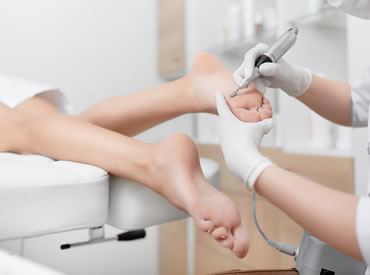
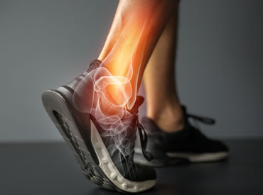
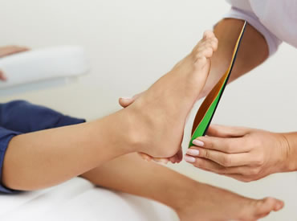
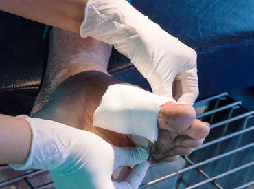
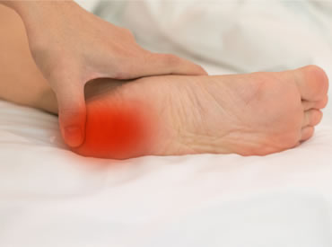

General Podiatry Care
Assessment and treatment of lesions of the skin and nails (e.g. fungal and thickened nails, corns, callus), treatment of foot infections (e.g. plantar warts, ingrown toenails), cracked heel and foot care and footwear education.

Gait & Biomechanical Assessment
A static and dynamic biomechanics assessment is an investigation into your lower limb function – looking closely for abnormalities and compensations. The assessment will focus on the structure, posture, range of motion, plantar pressure, alignment, strengths
and weaknesses of the foot and will include the pelvis, legs and knees and how they work together as pain in one area can indicate a weakness or structural problem in another.

Orthotics management, 3D scanning for orthotics
Our custom orthoses are designed to support, align and improve the function of your feet and lower limbs. This service includes casting, one pair of custom orthoses, standard covers, dispensing, and a follow-up appointment. We also provide prefabricated
orthotic and repair services

Diabetic foot care
A comprehensive foot examination for abnormalities, including evaluation of pulses, sensation, foot biomechanics (i.e., general foot structure and function), and nails, as well as a footwear assessment, helps determine the person’s category of risk for
developing foot complications. We will work closely with your GP, diabetes educator, dietitian and other relevant diabetes specialist to ensure we care for your feet and keep them health and in good state.

Acute and Chronic Foot pain Management
Musculoskeletal disorders affect bones, joints and muscles, and include pain syndromes and rarer conditions of the immune system. Musculoskeletal conditions are often multifaceted or combined with secondary conditions involving neurological, cutaneous
and subcutaneous, infective and immune and vascular components alongside mechanical. Podiatrists are ideally placed to lead the foot and ankle pathway and prevent unnecessary surgical interventions, by managing foot pain conservatively
in a local setting. Accessing the right clinician at the right time ensures that people have the best opportunity of appropriate interventions, treatments, self-management advice and rehabilitation. Podiatrists assess, diagnose and
offer early and ongoing treatments for musculoskeletal disorders affecting the foot, ankle and lower limb. It is important that people experiencing foot ankle and lower-limb pain can quickly and easily access a podiatrist for assessment,
diagnosis, treatment and rehabilitation. Eg Calcaneal or tibialis posterior never entrapment ,plantar heel pain, plantar fasciitis, plantar plate injuries, foot and ankle injuries, shin splints , sinu tarsi entrapment , severe’s and
achilles problems, knee and hip problem ,neuroma. hypermobility, stress fracture, osteoarthritis etc..

Paediatrics
Children’s feet are continually developing form birth to sixteen. Each individual child develops at different time frames to that of their peers and other family members. Therefore some children present with flat feet, in-toeing gait, heel pain, Severs
Disease, Osgood Schlaters, Dyspraxia, hypermobility, ligamentous laxity. Some even develop toe- nail conditions, ingrowing toe nails, sweaty smelly feet. With Posture Control we respond to concerns about a child’s walking style, sports
injuries and postural control. We treat children with special needs, sports injuries, and more common ailments.. We also treat symptomatic flat feet, Osgood Slatter’s disease and Sever’s disease. We also provide treatment to children
with Down Syndrome , Dyspraxia and young Athletes. We can prescribe orthotic devices to help improve motor function and to treat underlying foot injuries